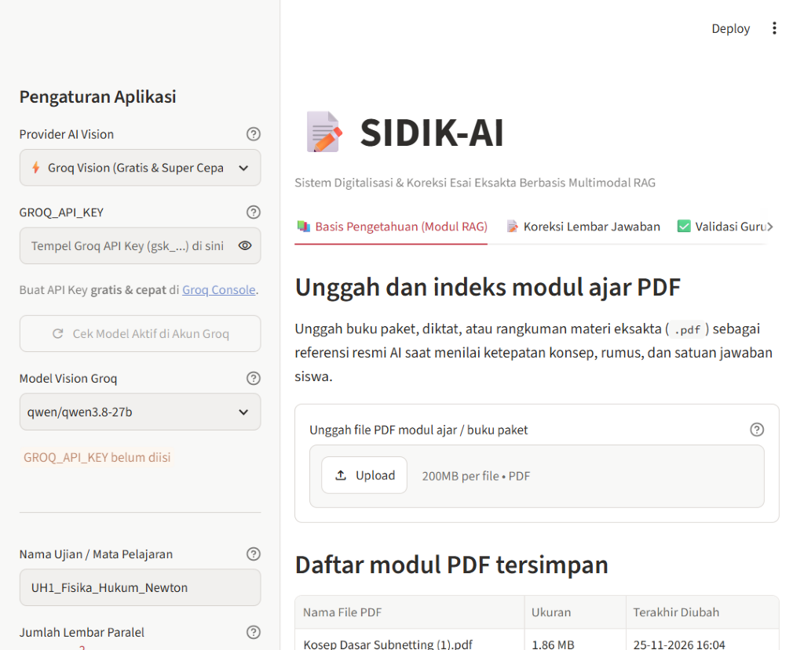
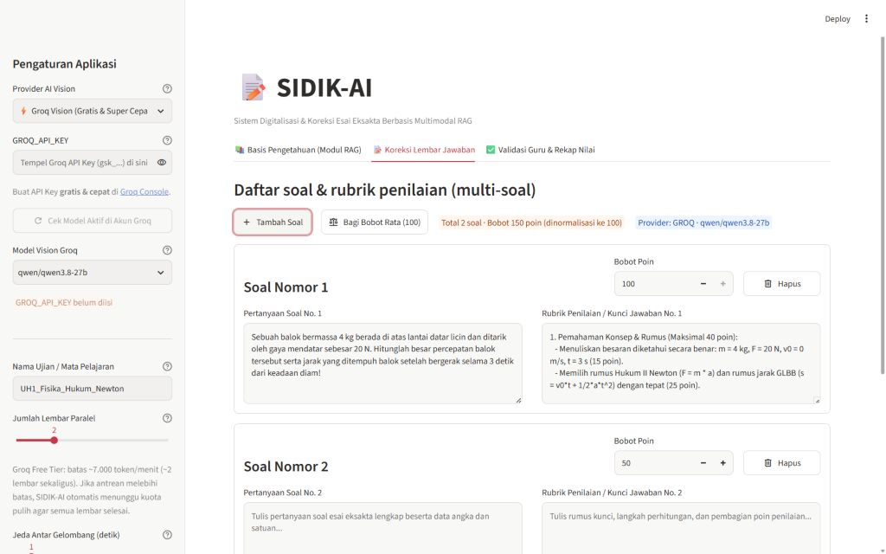
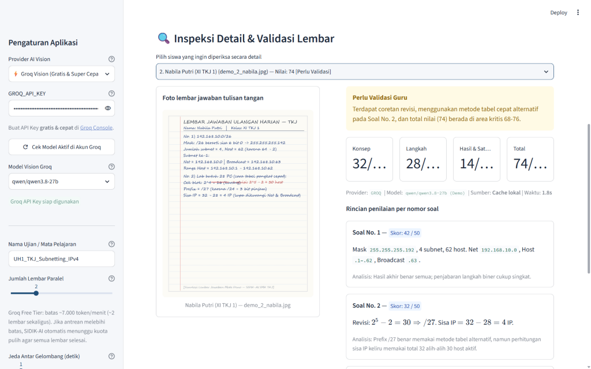
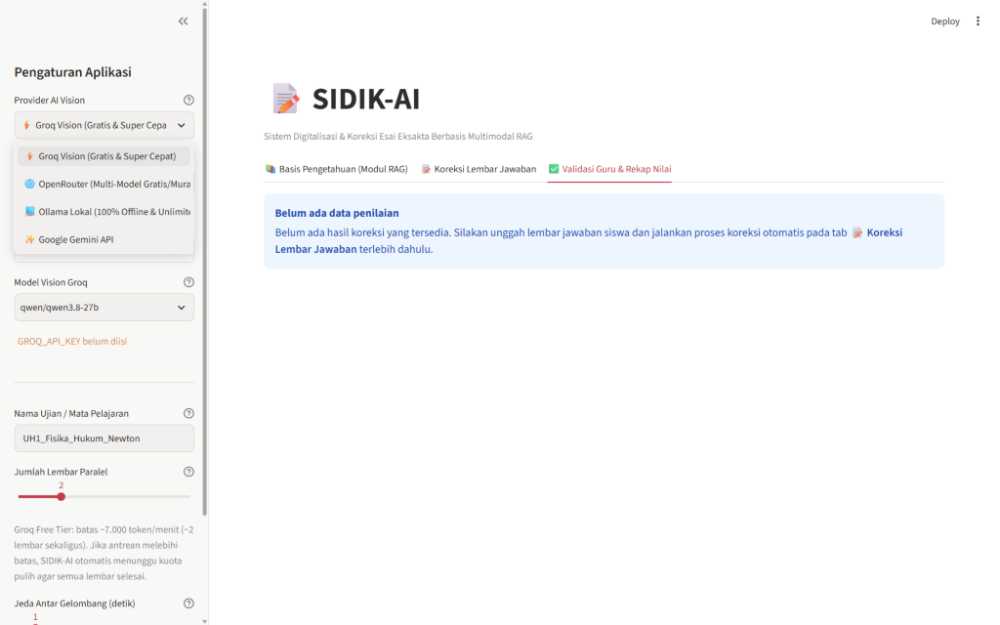

| Nama Penulis | : [ISI NAMA LENGKAP & GELAR ANDA] |
| Asal Sekolah | : [ISI NAMA SMK ANDA — KABUPATEN MALANG] |
| Konsentrasi Keahlian | : Teknik Komputer dan Jaringan (TKJ) |
| Nomor WhatsApp | : [ISI NOMOR WA AKTIF ANDA] |
| Portofolio Inovasi | : GitHub https://github.com/hayodavis/sidik-ai | Live Demo: https://sidik-ai.streamlit.app |
Setiap kali ulangan harian materi Konsep Dasar Subnetting IPv4 dan VLSM selesai dilaksanakan di kelas Teknik Komputer dan Jaringan (TKJ), meja kerja saya selalu dipenuhi tumpukan lembar jawaban tulisan tangan siswa. Bagi siswa SMK TKJ, subnetting adalah fondasi penting sebelum mereka mengonfigurasi router, membangun jaringan laboratorium, atau terjun ke dunia kerja industri jaringan. Namun di sisi lain, materi ini pula yang paling sering membuat siswa menyerah di tengah jalan.
Bukan karena mereka tidak mampu, melainkan karena perhitungan subnetting menuntut ketelitian berantai:
mengubah prefix CIDR ke biner, menghitung blok subnet, mencari jumlah host aktif (2^h - 2), hingga
menentukan Network ID, rentang IP Host Valid, dan Broadcast Address. Satu langkah keliru di awal—misalnya
lupa mengurangi 2 untuk alamat jaringan dan broadcast—akan menggeser jawaban akhir mereka.
Di sanalah keresahan hati saya sebagai guru muncul. Ketika mengajar beberapa kelas paralel dengan jumlah total [ISI JUMLAH SISWA, misal: 108 siswa dari 3 kelas XI TKJ], mengoreksi seluruh lembar secara manual sekaligus menuliskan catatan perbaikan personal di setiap kertas menyita waktu hingga berjam-jam, bahkan sering terbawa pulang hingga larut malam. Akibatnya, siswa sering baru menerima hasil beberapa hari kemudian—itu pun terkadang hanya berupa angka nilai tanpa penjelasan rinci di langkah mana mereka keliru. Saat kertas dibagikan, sebagian siswa hanya menatap angka merahnya dengan bingung, lalu melipatnya tanpa pernah benar-benar memahami kesalahannya.
Sebagai guru kejuruan di bidang teknologi jaringan, saya bertanya pada diri sendiri: mengapa kecerdasan artifisial (AI) yang berkembang begitu pesat belum kita manfaatkan untuk meringankan beban koreksi guru secara sehat dan mendidik? Namun saat mulai mencari solusi, saya menghadapi tiga tantangan besar:
Berbekal semangat sebagai guru pembelajar, saya mulai merancang dan mengembangkan sendiri aplikasi web lokal bernama SIDIK-AI (Sistem Digitalisasi & Koreksi Esai Berbasis AI). Aplikasi ini berjalan langsung di laptop guru melalui browser dengan antarmuka sederhana dalam bahasa Indonesia, sehingga mudah digunakan oleh guru lain pula.
Ada empat prinsip utama yang saya tanamkan ke dalam SIDIK-AI agar benar-benar selaras dengan kebutuhan kelas SMK:


Bagian yang paling saya syukuri dari SIDIK-AI adalah Tab Validasi Guru & Rekap Nilai.
Di layar ini, foto asli tulisan tangan siswa ditampilkan berdampingan dengan hasil transkripsi rumus, analisis per nomor soal,
serta umpan balik personal yang ramah dan memotivasi. Guru dapat langsung memeriksa lembar yang bertanda
Perlu Validasi Guru, mengubah skor secara manual bila diperlukan, lalu mengekspor seluruh rekap ke Microsoft Excel
(.xlsx) dalam satu klik.

/27
tanpa menjabarkan biner panjang seperti di modul, disertai beberapa coretan revisi. SIDIK-AI langsung memberi tanda kuning
Perlu Validasi Guru. Saya dapat langsung meninjau foto aslinya, mengapresiasi kreativitas cara berpikirnya,
lalu mengoreksi satu kekeliruan kecilnya secara langsung di depan meja praktik. Siswa merasa benar-benar dilihat dan dihargai usahanya.
Perubahan terbesar yang saya rasakan setelah menerapkan SIDIK-AI bukan sekadar soal kecepatan komputer, melainkan bagaimana waktu yang terselamatkan itu kembali untuk siswa:
| Aspek Pembelajaran | Sebelum Menggunakan SIDIK-AI | Sesudah Menggunakan SIDIK-AI |
|---|---|---|
| Waktu Koreksi (1 Kelas) | ±2,5 hingga 3 jam koreksi manual bertahap (sering tertunda beberapa hari). | ±5 hingga 10 menit untuk foto, koreksi batch, dan validasi guru pada lembar kritis. |
| Kualitas Umpan Balik | Umumnya berupa angka nilai dan coretan singkat karena keterbatasan waktu. | Setiap siswa menerima umpan balik personal yang ramah, spesifik per langkah, dan memotivasi. |
| Pendampingan Siswa | Guru kelelahan secara administratif; remedial sering bersifat umum untuk seluruh kelas. | Guru segera mengetahui pola miskonsepsi tiap siswa (misal lupa 2^h - 2) dan langsung membimbing di lab. |
| Rekap Administrasi | Input ulang nilai satu per satu ke buku nilai / spreadsheet secara manual. | Otomatis tersusun dalam rekap Excel (.xlsx) lengkap dengan skor per soal & catatan analisis. |
Perjalanan membangun SIDIK-AI mengajarkan saya satu pelajaran penting tentang makna profesi guru di era kecerdasan artifisial. Di tengah kekhawatiran sebagian orang bahwa AI akan menggeser peran pendidik, pengalaman kecil di kelas SMK TKJ ini justru membuktikan sebaliknya: teknologi terbaik adalah teknologi yang mengembalikan waktu guru untuk kembali mendidik hati.
Ketika mesin membantu mengerjakan tugas mekanis membaca lembar demi lembar dan merapikan rekap nilai, saya memiliki energi yang utuh untuk duduk di samping siswa yang kesulitan memahami jaringan, menyemangati mereka yang hampir putus asa, dan merayakan setiap langkah kecil kemajuan mereka.
Saya pun membuka kode sumber SIDIK-AI secara gratis di GitHub agar rekan-rekan guru SMK, SMA, maupun PKLK lainnya—tidak hanya di mata pelajaran TKJ, tetapi juga Matematika, Fisika, dan Kimia—dapat ikut memanfaatkannya, memodifikasinya, dan bersama-sama menghadirkan pembelajaran yang lebih adil dan bermakna bagi generasi penerus bangsa.
Malang, November 2026
Guru Pembelajar,
[ISI NAMA LENGKAP & GELAR ANDA]
Guru Teknik Komputer dan Jaringan — [ISI NAMA SMK ANDA]
Untuk memudahkan Bapak/Ibu Dewan Juri memverifikasi dan mencoba langsung inovasi SIDIK-AI tanpa perlu melakukan instalasi perangkat lunak apa pun, berikut tautan akses publik yang dapat dibuka melalui browser laptop maupun ponsel:
| 1. Aplikasi Web Interaktif | : https://sidik-ai.streamlit.app |
| 2. Video Demo (2 Menit) | : [ISI TAUTAN VIDEO DEMO GOOGLE DRIVE / YOUTUBE UNLISTED] |
| 3. Kode Sumber Terbuka | : https://github.com/hayodavis/sidik-ai |
.xlsx).